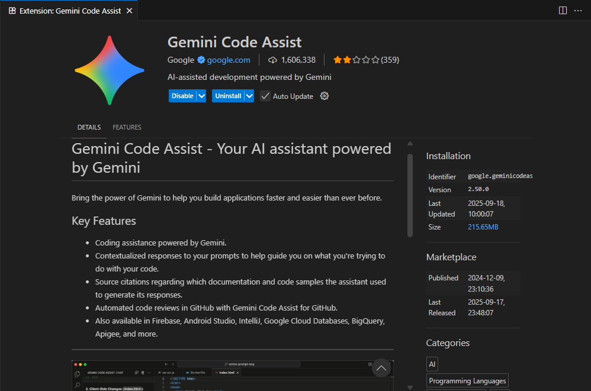
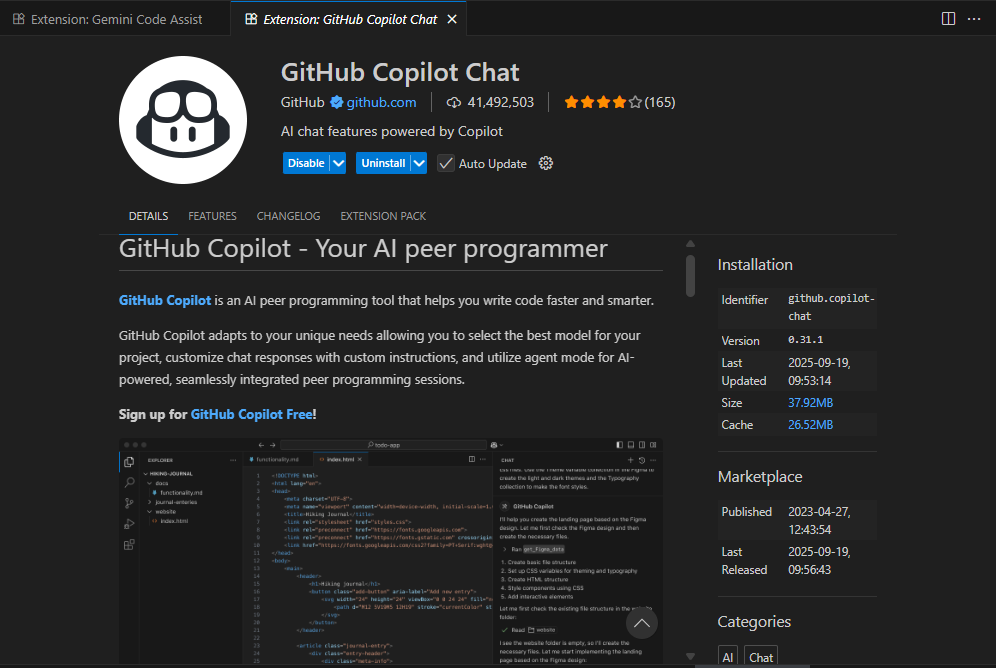
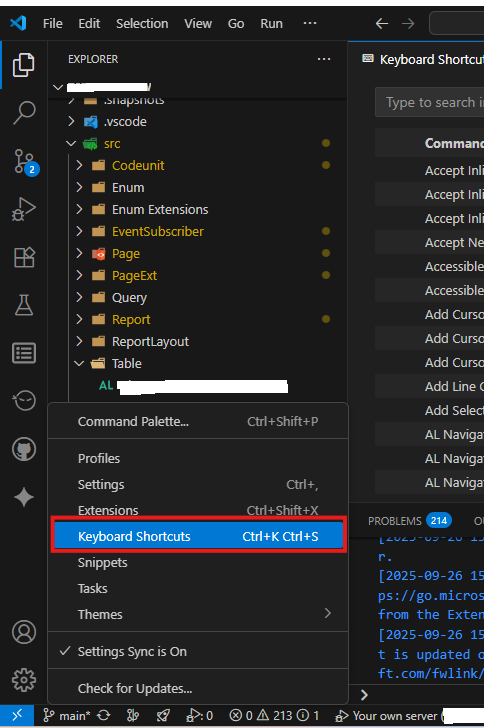
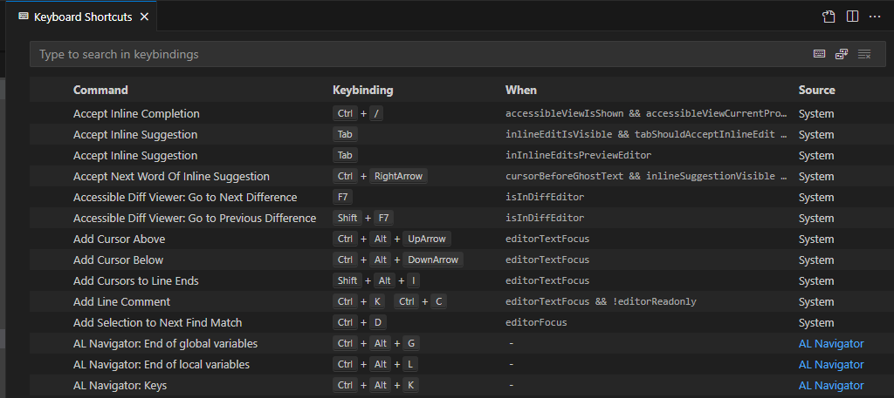

🚀 Boost Your AL Coding Productivity with AI Extensions & Custom Shortcuts
Working on AL development can be faster and smarter if you use the right tools in Visual Studio Code (VS Code). Here are two must-have extensions and some powerful keyboard shortcuts to enhance your workflow.
🔹 1. AI-Powered Extensions for AL Coding
✨ Gemini Code Assist
- Coding assistance powered by Google Gemini.
- Provides contextual responses to help with code logic and completions.
- Offers source citations for documentation/code samples.
- Supports automated code reviews in GitHub.

🤖 GitHub Copilot Chat
- AI peer programmer that helps you write code faster.
- Chat interface to describe requirements and get instant solutions.
- Adapts to project needs with custom instructions.
- Seamlessly integrates with debugging and peer programming.

⚠️ Important Reminder:
These tools assist in coding, but always ensure:
- The logic and requirements match your project needs.
- You review & test code before publishing.
🔹 2. VS Code Keyboard Shortcuts for AL Developers
Efficient coding isn’t only about AI assistance—keyboard shortcuts save tons of time.
🔑 Key Highlights
- Open shortcuts editor: Ctrl + K Ctrl + S
- Right-click any command → Configure Keybinding.
- Use Keymap extensions to import familiar shortcuts.
- Detect conflicts via Show Same Keybindings.
- Deep customization possible via keybindings.json.

⚡ AL Coding Shortcuts
✍️ General Editing
- Ctrl + Space → Trigger IntelliSense.
- Alt + Shift + F → Format AL code.
- Ctrl + / → Toggle line comment.
- Shift + Alt + A → Block comment (/*...*/).
🔎 Navigation
- Ctrl + P → Quick open files.
- F12 → Go to definition.
- Alt + F12 → Peek definition.
- Ctrl + Shift + O → Navigate file symbols.
▶️ Running & Debugging
- Ctrl + F5 → Publish without debugging.
- F5 → Publish + debug.
- F9 → Toggle breakpoint.
- F10 / F11 → Step over / Step into.
🚀 Productivity Boost
- Ctrl + Shift + L → Select all occurrences.
- Alt + Click → Multi-cursor editing.
- Ctrl + D → Duplicate line.
- Ctrl + Shift + F → Search workspace.

✅ Conclusion
By combining AI-powered coding assistants (Gemini & Copilot) with optimized VS Code shortcuts, you can significantly boost your AL development speed, reduce errors, and stay focused on business logic instead of repetitive tasks.